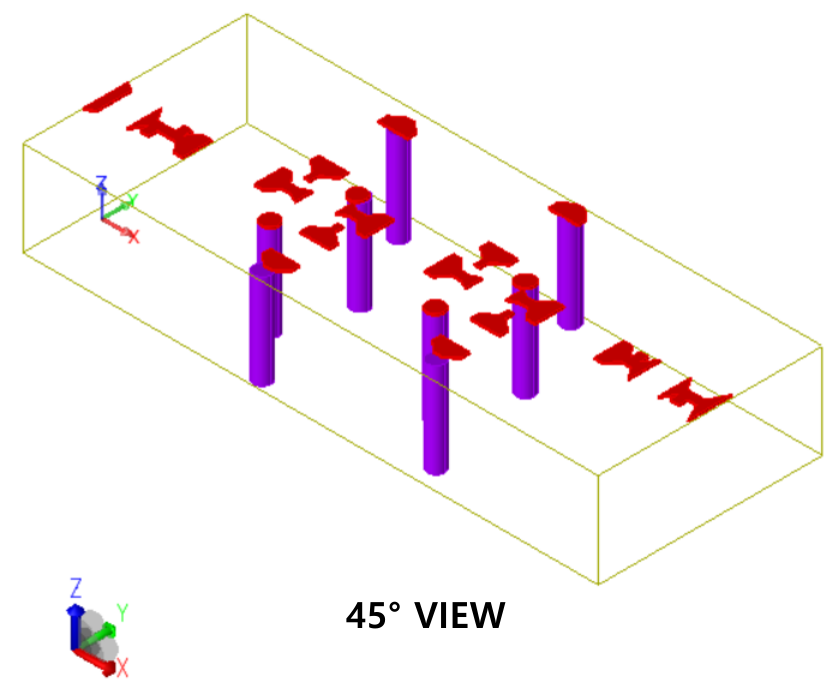

Team course project · Microwave Engineering · Prof. Wooyeol Choi
Co-designed a wideband PCB amplifier in Keysight ADS, combining a two-transistor signal path with input/output matching and DC bias networks. The design was evaluated at both the schematic and electromagnetic (EM) simulation levels.
Design goal
The course brief called for a WLAN amplifier using a commercial SAV-541-DG+ packaged transistor and a low-cost PCB process, targeting the 2.4, 5, and 6 GHz bands.
| Parameter | Target |
|---|---|
| Bandwidth around each target band | Greater than 10% |
| Forward gain | Greater than 10 dB |
| Input and output reflection | Below −10 dB |
Core idea: tune the matching, then evaluate the physical layout
Double-stub networks at the input and output provide control over impedance matching. Transmission-line dimensions and component models were tuned in ADS, then the PCB geometry was incorporated into an EM-based circuit simulation to evaluate layout effects.


Enlarge image ⤢Simulation result
Reported EM-simulated band: 1.6–6.3 GHz. The EM model produced forward-gain values of 34.964 dB at 1.6 GHz and 10.029 dB at 6.3 GHz. These are simulation results from the completed design project.